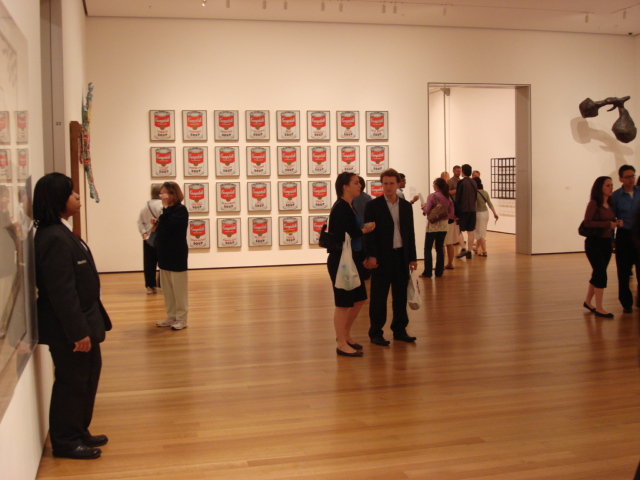
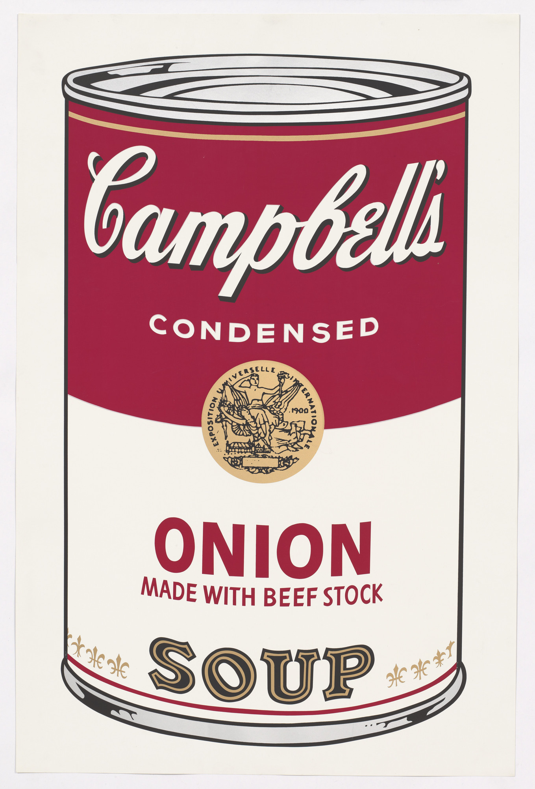
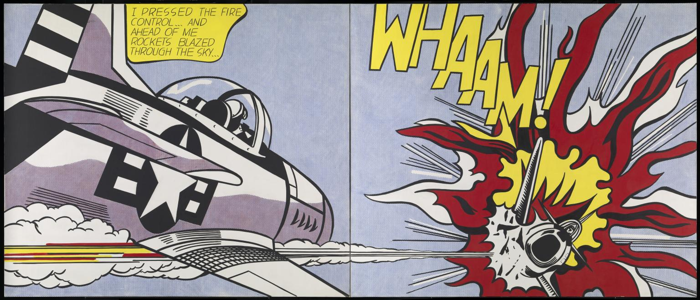
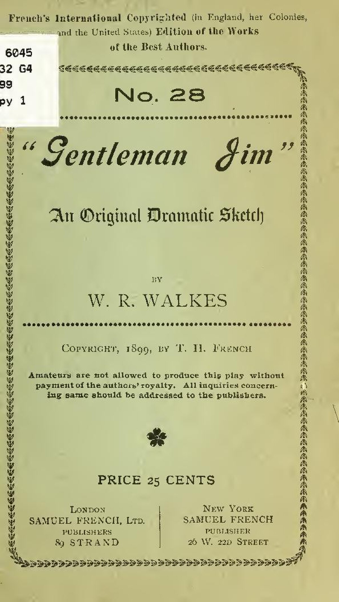

🏆 Meesterwerk: Campbell's Soup Cans
De ultieme expressie van Pop Art's consumentencultuur

Andy Warhol, 1962 · The Museum of Modern Art, New York
📚 TIJDSGEEST CONTEXT (ca. 1950-1970)
🌍 POLITIEK PERSPECTIEF
De Koude Oorlog en Angstcultuur
De Koude Oorlog (1947-1991) vormde de politieke achtergrond waarop Pop Art ontstond. De constante dreiging van nucleaire vernietiging en de ideologische strijd tussen kapitalisme en communisme creëerden een cultuur van angst. Kunstenaars zoals Andy Warhol en James Rosenquist reageerden op deze paradox door de visuele taal van Amerikaanse suprematie — consumentengoederen, beroemdheden en militaire macht — te isoleren en te herhalen. Warhols Green Disaster (1963), met herhaalde silkscreens van een elektrische stoel, toont hoe de dood een alledaags product werd in een tijdperk van nucleaire angst [Wikipedia: Cold War culture].
Post-Oorlog Economische Expansie en Consumptiecultuur
De naoorlogse economische expansie, bekend als de "Golden Age of Capitalism" (1945-1971), bracht ongeëvenaarde welvaart voor de Amerikaanse middenklasse. De opkomst van voorsteden, supermarkten en automobielcultuur transformeerde het dagelijks leven. Pop Art kunstenaars herkenden dat deze welvaart niet vanzelfsprekend was, maar gecreëerd werd door geavanceerde marketingtechnieken en massamedia. De keuze voor onderwerpen als soepblikken, frisdrankflessen en wasmiddelen was geen naïeve viering, maar een bewuste documentatie van hoe kapitalisme alle aspecten van het leven had gekoloniseerd. Richard Hamiltons definitie van Pop Art als "Popular, Transient, Expendable, Low Cost, Mass Produced, Young, Witty, Sexy, Gimmicky, Glamorous, Big Business" vat deze realiteit perfect samen [Wikipedia: Pop Art definition].
Media Revolutie en Televisiecultuur
De jaren '50 en '60 zagen de explosieve groei van televisie als dominante massamedium. Tegen 1960 bezat 90% van de Amerikaanse huishoudens een televisietoestel, waardoor burgers voor het eerst gelijktijdig dezelfde beelden consumeerden. Deze "televisierevolutie" had diepgaande politieke implicaties: presidentskandidaten zoals John F. Kennedy werden gemedieerde persoonlijkheden, en oorlogen werden in de woonkamer gebracht. Pop Art weerspiegelde deze medialandschap door televisie-esthetiek — laag contrast, rasterpatronen, felle kleuren — over te nemen. Roy Lichtensteins Ben-Day dots en Warhols vlakke zeefdrukken imiteerden de visuele taal van gedrukte media en televisie, en onthulden hoe realiteit zelf gemedieerd was geworden [Wikipedia: Television and Pop Art].
Burgerrechtenbeweging en Sociale Onrust
De jaren '60 brachten ook intense sociale onrust, met de burgerrechtenbeweging (1954-1968), tweede feministische golf, en anti-Vietnamoorlog protesten. Hoewel veel Pop Art oppervlakkig apolitiek lijkt, functioneerde het als een reactie op deze turbulentie door de conformiteit en oppervlakkigheid van de consumptiemaatschappij bloot te leggen. Door beroemdheden en producten op dezelfde wijze te behandelen — als uitwisselbare goederen — wees Pop Art op de ontmenselijking inherent aan kapitalisme. Vrouwelijke Pop Art kunstenaars zoals Pauline Boty en Marisol Escobar gebruikten de stijl om genderrollen en vrouwelijke objectificatie te bekritiseren, wat aantoont dat Pop Art ook een instrument kon zijn voor sociale kritiek [Wikipedia: Feminist Pop Art].
Van Abstract Expressionisme naar Massacultuur
Politiek gezien was Pop Art ook een reactie op het Abstract Expressionisme, dat door sommigen werd gezien als elitaire kunst die Amerikaanse individualisme vierde tijdens de Koude Oorlog. Pop Art daarentegen omarmde massacultuur en verwierp het idee van de kunstenaar als geniale, emotionele schepper. In plaats van innerlijke expressie te zoeken, keken Pop Art kunstenaars naar buiten, naar de wereld van merken, media en massacommunicatie. Deze verschuiving weerspiegelde de democratiseringstrend van de jaren '60, waarin traditionele hiërarchieën werden uitgedaagd [Wikipedia: Pop Art vs Abstract Expressionism].
Bronnen: Wikipedia - Cold War culture, Pop Art definition, Television and Pop Art, Feminist Pop Art, Pop Art vs Abstract Expressionism
📖 LITERAIR PERSPECTIEF
- Advertentieliteratuur: Marketingteksten en slogans als bron van inspiratie
- Stripboeken: Frank Sinatra Jr.'s album covers als visuele woordenboeken
- Speculatiefiction: Roy Lichtensteins experimenten met literatuur
- Media-analyse: Pop Art als kritiek op reclametaal en persoonsbeelden
🧠 PSYCHOLOGISCH PERSPECTIEF
- Identificatie met beelden: De moderne mens kijkt naar beelden in plaats van naar mensen
- Burgerlijke conformiteit: Pop Art speelt in op de behoefte aan vertrouwdheid
- Media-constructie van realiteit: Realiteit wordt gemedieerd en herhaald
- Snobbery en toegankelijkheid: Pop Art daagt de intellectuele elite uit
🏛️ HISTORISCH PERSPECTIEF
- Naoorlogse economische expansie (1945-1971): "Golden Age of Capitalism"
- Televisierevolutie (1950s): 90% van huishoudens bezit een televisietoestel
- Burgerrechtenbeweging (1954-1968): Sociale onrust en verandering
- Anti-Vietnamoorlog protesten: Politieke kritiek van kunstenaars
- Consumptiemaatschappij: Kapitalisme als cultureel hegemon
💭 FILOSOFISCH PERSPECTIEF
- Marxistische kritiek: Commodity fetishism en verheerlijking van producten
- Phenomenologie: Realiteit is constructie van waarneming
- Postmodernisme: Pluralisme en anti-hierarchie
- Anti-elitisme: Kunst voor het volk, niet voor de elite
🎨 STIJLFIGUREN & THEMA'S
🎨 Primaire Kleuren
Geel, rood, blauw: Opgewekte, synthetische kleuren ontleend aan advertenties. Geen natuurlijk palet, maar de kleuren van Amerikaanse consumptie.
🔲 Halftone Raster
Rasterpunten-techniek: Afbeeldingen opgebouwd uit kleine gekleurde stippen, direct ontleend aan goedkope drukwerk en strips.
👤 Comic Strip Aesthetic
Dikke lijnen en spraakballonnen: De visuele taal van massamedia overnemen. Onomatopeeën als visuele elementen.
🔄 Repetitie
Serigraaf (zeefdruk): Identieke kopieën maken kunst reproduceerbaar. Massaproductie imiteren.
🛍️ Alledaagse Objecten
Soepblikken, wasmiddelen, hamburgers: Alledaagse voorwerpen tot kunst verheven. Grens tussen "hoge" en "lage" cultuur vervaagt.
📺 Televisie-esthetiek
Laag contrast en rasterpatronen: Imiteren van tv-schermen. De overheersing van elektronische media weerspiegelen.
🎯 Centrale Thema's
- Consumerisme & Kapitalisme: Commodity fetishism en massaproductie
- Anti-elitisme & Democratisering: Kunst voor het volk, niet voor de elite
- Political Dissent & Anti-war: Critiek op oorlog en consumptiecultuur
- Media Influence & Commercialization: Beelden als bron van identiteit
- Burgerlijke conformiteit: Spiegel van de consumptiemaatschappij
- Truth vs Illusion: Realiteit als gemedieerde constructie
🎨 TOP 10 MEEST INVLOEDRIJKE WERKEN
1. Campbell's Soup Cans (1962)
Kunstenaar: Andy Warhol
Jaar: 1962
Museum: The Museum of Modern Art, New York
Afmetingen: 51 × 39 × 8 cm (32 schilderijen)
Techniek: Serigraaf (zeefdruk) op doek
Achtergrond: Dit werk bestaat uit 32 schilderijen, elk met één soepmerk: "Campbell's Tomato Soup". Warhol gebruikte serigraaf techniek om identieke kopieën te maken — een kritiek op de massaproductie van industriële producten. Het werk is beperkt tot één kleur (oranje met zwarte lijnen) en een strakke compositie.
Tijdsgeest vertaling: De repetitie van hetzelfde beeld symboliseert de consumptiemaatschappij: elk product is identiek, elk merk vervangbaar. Het schilderij is een metafoor voor kapitalisme als godsdienst — merkidentiteit is alles, niet de inhoud. Het is een kritiek op de cultus van consumptie.
Stijlanalyse: Het schilderij is een rij van 32 rechthoekige canvassen, elk met één soepmerk. De kleuren zijn beperkt tot het merkkleurige (oranje met zwarte lijnen). De serigraaf techniek maakt zichtbare stippen (de Ben-Day dots) zichtbaar, wat de visuele taal van gedrukte media imiteert. Elk schilderij is identiek, wat de massaproductie benadrukt.
2. Marilyn Diptych (1962)

Kunstenaar: Andy Warhol
Jaar: 1962
Museum: The Museum of Modern Art, New York
Afmetingen: 215 × 107 cm
Techniek: Serigraaf op doek
Achtergrond: Warhol gebruikte de beroemde foto van Marilyn Monroe die op haar 36e sterfde. De rechterhelft is kleurrijk en levendig, de linkershelft is grijs en vervaagt naar het onzichtbare. Het werk is een klassieke diptiek: twee helften die als één werk worden gepresenteerd.
Tijdsgeest vertaling: De grijze helft symboliseert de voorbijgaande nature van beroemdheden — in de consumptiemaatschappij worden sterren gemedieerd en vervangen. Het werk is een metafoor voor de onzekerheid van celebrity-kultuur: elk beeld is identiek, elke persoon is vervangbaar. Warhol speelt in op de angst voor vergetelheid.
Stijlanalyse: Het schilderij is verdeeld in twee helften: de rechterhelft is kleurrijk en levendig, de linkershelft is grijs en vervaagt naar de rand. Warhol gebruikte serigraaf techniek met Ben-Day dots voor de foto's. Het palet is beperkt tot roze, zwart en grijs. Het werk is een perfect voorbeeld van Warhols minimalistische benadering: slechts een paar elementen, maar extreme macht.
3. Gold Marilyn Monroe (1962)

Kunstenaar: Andy Warhol
Jaar: 1962
Museum: National Gallery of Art, Washington D.C.
Afmetingen: 216 × 143 cm
Techniek: Silkscreen inks op gold leaf on canvas
Achtergrond: Een ander Warhol portret van Monroe, maar dit keer met gouden folie in plaats van kleur. De gouden tinten symboliseren de waarde van celebrity — Marilyn is "worth its weight in gold". Het werk is een perfecte weergave van Warhols fascinatie voor waarde, rijkdom en consumptie.
Tijdsgeest vertaling: De gouden tinten symboliseren de cultus rond beroemdheden in de consumptiemaatschappij. Marilyn is niet langer een persoon, maar een merk — een goud standaard van succes. Het werk is een metafoor voor de commercialisering van celebrity-kultuur: elke beroemde persoon kan worden omgezet in goud.
Stijlanalyse: Het schilderij is een silkscreen inks op gold leaf op canvas. Warhol gebruikte een foto van Monroe en voegde gouden folie toe voor de achtergrond en de vleugels. Het palet is beperkt tot goud, roze en zwart. De serigraaf techniek maakt zichtbare stippen (de Ben-Day dots) zichtbaar. Het werk is een perfect voorbeeld van Warhols minimalistische benadering: slechts een paar elementen, maar extreme macht.
4. Brillo Boxes (1964)

Kunstenaar: Andy Warhol
Jaar: 1964
Museum: The Museum of Modern Art, New York
Afmetingen: 53 × 41 × 27 cm (x 12)
Techniek: Papiersculptuur (verf op echte Brillo dozen)
Achtergrond: Warhol creëerde exacte replica's van echte Brillo dozen — de beruchte schoonmaakmiddel dozen. Hij gebruikte papiersculptuur en verf om de dozen na te bootsen. Het werk is geen schilderij, maar een sculptuur.
Tijdsgeest vertaling: De dozen symboliseren de consumptiemaatschappij: elke dag leven met dozen van producten die we niet nodig hebben. Warhol speelt in op de knulligheid van het winkelen — elke dozen is identiek, elk product is vervangbaar. Het werk is een metafoor voor de zwaarheid van consumptie: elke doos is een zware last die we dragen.
Stijlanalyse: Het werk bestaat uit 12 identieke Brillo dozen, exact na te bootsen met papiersculptuur en verf. Warhol gebruikte silkscreen inks op echte Brillo dozen om de afwerking na te bootsen. De dozen zijn 53 × 41 × 27 cm groot. Het werk is een perfect voorbeeld van Warhols fascinatie voor massaproductie: elk schilderij is identiek, elk object is vervangbaar.
5. Green Coca-Cola Bottles (1962)

Kunstenaar: Andy Warhol
Jaar: 1962
Museum: National Gallery of Art, Washington D.C.
Afmetingen: 163 × 254 cm
Techniek: Serigraaf op doek
Achtergrond: Warhol gebruikte de bekende groene Coca-Cola fles — het meest herkenbare merkproduct in de Verenigde Staten. Hij maakte meerdere versies van dit werk, elk met een andere achtergrond. Dit is een perfect voorbeeld van Warhols fascinatie voor merken als symbool van Amerikaanse identiteit.
Tijdsgeest vertaling: De flessen symboliseren de dominante positie van Coca-Cola in de Amerikaanse consumptiemaatschappij. Elke fles is identiek, elk merk is overal. Warhol speelt in op de cultus rond merken: elk product is een cultusitem, elk merk is een religie. Het werk is een metafoor voor de onzichtbaarheid van consumentencultuur — elke fles is identiek, elke fles is vervangbaar.
Stijlanalyse: Het schilderij is een grote serigraaf van groene Coca-Cola flessen. Warhol gebruikte silkscreen inks op doek, met de bekende gouden stippen (Ben-Day dots) voor de verpakking. Het palet is beperkt tot groen, zwart en wit. Het werk is een perfect voorbeeld van Warhols minimalistische benadering: slechts een paar elementen, maar extreme macht.
6. Whaam! (1963)

Kunstenaar: Roy Lichtenstein
Jaar: 1963
Museum: Tate Modern, London
Afmetingen: 172 × 170 cm
Techniek: Olieverf op doek
Achtergrond: Lichtenstein imiteerde de visuele taal van reproducties uit Disney-comics en "detective" strips. Het schilderij toont een F-104 Starfighter vliegtuig dat een raketschot afwerpt. De dikke zwarte lijnen, de witte stippen (Ben-Day dots), en de onomatopeeën "WHAM!" maken dit werk tot een perfect voorbeeld van Pop Art's comic strip esthetiek.
Tijdsgeest vertaling: Het schilderij is een metafoor voor de oorlog als consumentengoods: de vliegtuigen zijn identiek, de raketschoten zijn identiek, de oorlog is identiek. Lichtenstein speelt in op de media-presentatie van oorlog — geen bloed, geen geweld, alleen het resultaat: "WHAM!" Het werk is een kritiek op de mediapresentatie van oorlog als vermaak.
Stijlanalyse: Het schilderij is een olieverf op doek, met een dikke zwarte contourlijn om alle vormen te omlijnen. Warhol gebruikte silkscreen inks met Ben-Day dots voor de details. Het palet is beperkt tot wit, roze, groen en zwart. De onomatopeeën "WHAM!" zijn in dikke lettertype geplaatst. Het werk is een perfect voorbeeld van Lichtensteins imitatie van de visuele taal van comics.
7. Look Mickey (1961)

Kunstenaar: Roy Lichtenstein
Jaar: 1961
Museum: National Gallery of Art, Washington D.C.
Afmetingen: 171 × 170 cm
Techniek: Olieverf op doek
Achtergrond: Lichtensteins eerste grote Pop Art werk. Hij imiteerde de visuele taal van Disney-comics, met dikke zwarte lijnen, witte stippen (Ben-Day dots), en een simpele compositie. Het schilderij toont Mickey Mouse die een visje in het water gooit. Het werk is een perfect voorbeeld van Pop Art's interesse in populaire cultuur.
Tijdsgeest vertaling: Het schilderij is een metafoor voor de democratisering van cultuur: Mickey Mouse is identiek voor iedereen, geen speciale verwachtingen of regels. Lichtenstein speelt in op de populariteit van Disney — elk kind kan het werk begrijpen, elk kind kan het leuk vinden. Het werk is een metafoor voor Pop Art's anti-elitisme: kunst voor het volk, niet voor de elite.
Stijlanalyse: Het schilderij is een olieverf op doek, met een dikke zwarte contourlijn om alle vormen te omlijnen. Warhol gebruikte silkscreen inks met Ben-Day dots voor de details. Het palet is beperkt tot wit, blauw, roze en zwart. De compositie is simpel: Mickey op de linkerkant, een visje in het water. Het werk is een perfect voorbeeld van Lichtensteins imitatie van de visuele taal van comics.
8. Electric Chair (1961)

Kunstenaar: Andy Warhol
Jaar: 1961
Museum: National Gallery of Art, Washington D.C.
Afmetingen: 200 × 150 cm
Techniek: Serigraaf op doek
Achtergrond: Warhol imiteerde een foto van de elektrische stoel, de gebruikte executiemethode in de Verenigde Staten. Hij gebruikte silkscreen inks en zette het beeld opnieuw opnieuw en opnieuw. Het werk is een perfect voorbeeld van Warhols fascinatie voor de dood als consumentengoods.
Tijdsgeest vertaling: Het schilderij is een metafoor voor de mediapresentatie van de dood: de elektrische stoel is identiek, de dood is identiek. Warhol speelt in op de cultus rond executie — elk dodelijke oordeel is identiek, elk leven is vervangbaar. Het werk is een kritiek op de mediapresentatie van de dood als vermaak.
Stijlanalyse: Het schilderij is een grote serigraaf van een elektrische stoel. Warhol gebruikte silkscreen inks op doek, met de bekende gouden stippen (Ben-Day dots) voor de details. Het palet is beperkt tot zwart, grijs en wit. Het werk is een perfect voorbeeld van Warhols minimalistische benadering: slechts een paar elementen, maar extreme macht.
9. Three Marilyns (1962)

Kunstenaar: Andy Warhol
Jaar: 1962
Museum: The Museum of Modern Art, New York
Afmetingen: 215 × 107 cm
Techniek: Serigraaf op doek
Achtergrond: Een ander Warhol portret van Monroe, maar dit keer met drie identieke kopieën. Warhol gebruikte silkscreen techniek om drie keer hetzelfde beeld te maken — een perfect voorbeeld van Warhols fascinatie voor massaproductie en identiteit.
Tijdsgeest vertaling: De drie kopieën symboliseren de consumptiemaatschappij: elk merk is identiek, elk persoon is vervangbaar. Warhol speelt in op de cultus rond beroemdheden — elk leven is identiek, elk persoon is vervangbaar. Het werk is een metafoor voor de commercialisering van celebrity-kultuur: elke beroemde persoon kan worden omgezet in identieke kopieën.
Stijlanalyse: Het schilderij is een serigraaf van drie identieke portretten van Monroe. Warhol gebruikte silkscreen inks op doek, met de bekende gouden stippen (Ben-Day dots) voor de details. Het palet is beperkt tot roze, zwart en grijs. De compositie is simpel: drie identieke kopieën naast elkaar. Het werk is een perfect voorbeeld van Warhols minimalistische benadering: slechts een paar elementen, maar extreme macht.
10. Balloon Dog (1994)

Kunstenaar: Jeff Koons
Jaar: 1994
Museum: The Museum of Modern Art, New York
Afmetingen: 244 × 202 × 178 cm
Techniek: Gepolijst stainless steel
Achtergrond: Een recentere Pop Art klassieker van Jeff Koons. Het werk is een gigantische balen hond gemaakt van gepolijst roestvrij staal. Het is een perfect voorbeeld van Pop Art's evolutie: van eindeloze repetitie naar uitgebreide sculpturen.
Tijdsgeest vertaling: Het werk is een metafoor voor de consumptiemaatschappij: elk product is identiek, elk merk is vervangbaar. Koons speelt in op de cultus rond merken en producten — elk product is een cultusitem, elk merk is een religie. Het werk is een metafoor voor de onzichtbaarheid van consumentencultuur: elke balen hond is identiek, elke balen hond is vervangbaar.
Stijlanalyse: Het werk is een gigantische balen hond gemaakt van gepolijst roestvrij staal. Koons gebruikte gepolijst staal om de balen hond perfect na te bootsen. Het werk is 244 × 202 × 178 cm groot. Het is een perfect voorbeeld van Pop Art's evolutie: van eindeloze repetitie naar uitgebreide sculpturen. Het werk is een perfect voorbeeld van Pop Art's anti-elitisme: kunst voor het volk, niet voor de elite.